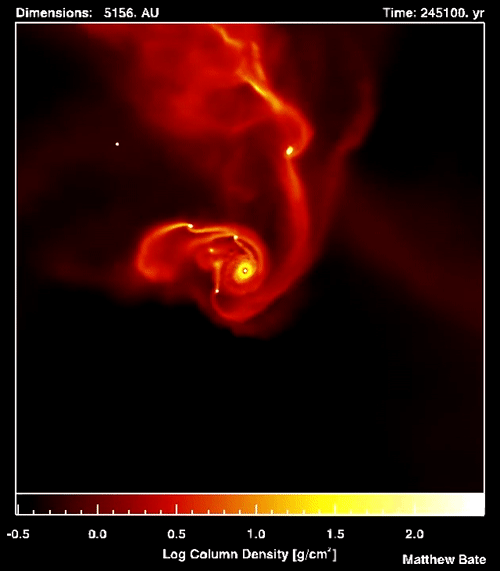

Everything you wanted to know about stars
These luminous balls of gas helped ancient explorers navigate the seas and now help modern-day scientists navigate the universe.
Stars are huge celestial bodies made mostly of hydrogen and helium that produce light and heat from the churning nuclear forges inside theiir cores.
Aside from our sun, the dots of light we see in the sky are all light-years from Earth.
They are the building blocks of galaxies, of which there are billions in the universe. It's impossible to know how many stars exist, but estimate that in our Milky Way galaxy lone, there are about 300 billions.
TYPES OF STAR

NEUTRON STAR
A neutron star is the collapsed core of a massive supergiant star, which had a total mass of between 10 and 25 solar masses, possibly more if the star was especially metal-rich.Except for black holes and some hypothetical objects (e.g. white holes, quark stars, and strange stars), neutron stars are the smallest and densest currently known class of stellar objects.Neutron stars have a radius on the order of 10 kilometres (6 mi) and a mass of about 1.4 solar masses.They result from the supernova explosion of a massive star, combined with gravitational collapse, that compresses the core past white dwarf star density to that of atomic nuclei.
Once formed, they no longer actively generate heat, and cool over time; however, they may still evolve further through collision or accretion. Most of the basic models for these objects imply that neutron stars are composed almost entirely of neutrons (subatomic particles with no net electrical charge and with slightly larger mass than protons); the electrons and protons present in normal matter combine to produce neutrons at the conditions in a neutron star. Neutron stars are partially supported against further collapse by neutron degeneracy pressure, a phenomenon described by the Pauli exclusion principle, just as white dwarfs are supported against collapse by electron degeneracy pressure. However, neutron degeneracy pressure is not by itself sufficient to hold up an object beyond 0.7 M☉ and repulsive nuclear forces play a larger role in supporting more massive neutron stars.If the remnant star has a mass exceeding the Tolman–Oppenheimer–Volkoff limit of around 2 solar masses, the combination of degeneracy pressure and nuclear forces is insufficient to support the neutron star and it continues collapsing to form a black hole. The most massive neutron star detected so far, PSR J0952–0607, is estimated to be 2.35±0.17 solar masses.
DYING STAR
Ground-based telescopes make the nebula pictured here look rectangular in shape, hence its name: the Red Rectangle. But images taken by the Hubble Space Telescope revealed that it should more accurately be called the "Red X" nebula. The nebula's unique shape comes from gas and dust emitted in cone-shaped bursts from the dying star at its center. This star, which began shedding its outer layers about 14,000 years ago, will slowly become smaller and hotter and begin to release a flood of ultraviolet light.
SUPER NOVA
A supernova is a powerful and luminous explosion of a star. It has the plural form supernovae /-viː/ or supernovas, and is abbreviated SN or SNe. This transient astronomical event occurs during the last evolutionary stages of a massive star or when a white dwarf is triggered into runaway nuclear fusion. The original object, called the progenitor, either collapses to a neutron star or black hole, or is completely destroyed. The peak optical luminosity of a supernova can be comparable to that of an entire galaxy before fading over several weeks or months.
Supernovae are more energetic than novae. In Latin, nova means "new", referring astronomically to what appears to be a temporary new bright star. Adding the prefix "super-" distinguishes supernovae from ordinary novae, which are far less luminous. The word supernova was coined by Walter Baade and Fritz Zwicky in 1929.
The last supernova to be directly observed in the Milky Way was Kepler's Supernova in 1604, but the remnants of more recent supernovae have been found. Observations of supernovae in other galaxies suggest they occur in the Milky Way on average about three times every century. These supernovae would almost certainly be observable with modern astronomical telescopes. The most recent naked-eye supernova was SN 1987A, which was the explosion of a blue supergiant star in the Large Magellanic Cloud, a satellite of the Milky Way.
THE SUN
The Sun is the star at the center of the Solar System. It is a nearly perfect ball of hot plasma, heated to incandescence by nuclear fusion reactions in its core, radiating the energy mainly as light, ultraviolet, and infrared radiation. It is the most important source of energy for life on Earth.
The Sun's diameter is about 1.39 million kilometers (864,000 miles), or 109 times that of Earth. Its mass is about 330,000 times that of Earth, comprising about 99.86% of the total mass of the Solar System.Roughly three-quarters of the Sun's mass consists of hydrogen (~73%); the rest is mostly helium (~25%), with much smaller quantities of heavier elements, including oxygen, carbon, neon, and iron.
The Sun is a G-type main-sequence star (G2V). As such, it is informally, and not completely accurately, referred to as a yellow dwarf (its light is actually white). It formed approximately 4.6 billion years ago from the gravitational collapse of matter within a region of a large molecular cloud. Most of this matter gathered in the center, whereas the rest flattened into an orbiting disk that became the Solar System. The central mass became so hot and dense that it eventually initiated nuclear fusion in its core. It is thought that almost all stars form by this process.
Every second, the Sun's core fuses about 600 million tons of hydrogen into helium, and in the process converts 4 million tons of matter into energy. This energy, which can take between 10,000 and 170,000 years to escape the core, is the source of the Sun's light and heat. When hydrogen fusion in its core has diminished to the point at which the Sun is no longer in hydrostatic equilibrium, its core will undergo a marked increase in density and temperature while its outer layers expand, eventually transforming the Sun into a red giant. It is calculated that the Sun will become sufficiently large to engulf the current orbits of Mercury and Venus, and render Earth uninhabitable – but not for about five billion years. After this, it will shed its outer layers and become a dense type of cooling star known as a white dwarf, and no longer produce energy by fusion, but still glow and give off heat from its previous fusion.
PROXIMA CENTAURI
Proxima Centauri is a small, low-mass star located 4.2465 light-years (1.3020 pc) away from the Sun in the southern constellation of Centaurus. Its Latin name means the 'nearest [star] of Centaurus'. It was discovered in 1915 by Robert Innes and is the nearest-known star to the Sun. With a quiescent apparent magnitude 11.13, it is too faint to be seen with the unaided eye. Proxima Centauri is a member of the Alpha Centauri star system, being identified as component Alpha Centauri C, and is 2.18° to the southwest of the Alpha Centauri AB pair. It is currently 12,950 AU (0.2 ly) from AB, which it orbits with a period of about 550,000 years.
Proxima Centauri is a red dwarf star with a mass about 12.5% of the Sun's mass (M☉), and average density about 33 times that of the Sun. Because of Proxima Centauri's proximity to Earth, its angular diameter can be measured directly. Its actual diameter is about one-seventh (14%) the diameter of the Sun. Although it has a very low average luminosity, Proxima Centauri is a flare star that randomly undergoes dramatic increases in brightness because of magnetic activity. The star's magnetic field is created by convection throughout the stellar body, and the resulting flare activity generates a total X-ray emission similar to that produced by the Sun. The internal mixing of its fuel by convection through its core, and Proxima's relatively low energy-production rate, mean that it will be a main-sequence star for another four trillion years.
Proxima Centauri has three known exoplanets: Proxima Centauri b, Proxima Centauri c, and Proxima Centauri d.[nb 3] Proxima Centauri b orbits the star at a distance of roughly 0.05 AU (7.5 million km) with an orbital period of approximately 11.2 Earth days. Its estimated mass is at least 1.17 times that of Earth.[16] Proxima b orbits within Proxima Centauri's habitable zone—the range where temperatures are right for liquid water to exist on its surface—but because Proxima Centauri is a red dwarf and a flare star, the planet's habitability is disputed. A candidate super-Earth, Proxima Centauri c, orbits roughly 1.5 AU (220 million km) away every 1,900 d (5.2 yr).[17][18] A sub-Earth, Proxima Centauri d, orbits roughly 0.029 AU (4.3 million km) away every 5.1 days.
QUASI-STAR
A quasi-star would result from the core of a large protostar collapsing into a black hole, where the outer layers of the protostar are massive enough to absorb the resulting burst of energy without being blown away or falling into the black hole, as occurs with modern supernovae. Such a star would have to be at least 1,000 solar masses (2.0×1033 kg). Quasi-stars may have also formed from dark matter halos drawing in enormous amounts of gas via gravity, which can produce supermassive stars with tens of thousands of solar masses.Formation of quasi-stars could only happen early in the development of the Universe, before hydrogen and helium were contaminated by heavier elements; thus, they may have been very massive Population III stars. Such stars would dwarf VY Canis Majoris and Stephenson 2-18, both among the largest known modern stars, in size.
Once the black hole had formed at the core of the protostar, it would continue generating a large amount of radiant energy from the infall of stellar material. This constant outburst of energy would counteract the force of gravity, creating an equilibrium similar to the one that supports modern fusion-based stars.Quasi-stars would have had a short maximum lifespan, approximately 7 million years, during which the core black hole would have grown to about 1,000–10,000 solar masses (2×1033–2×1034 kg).[1][4] These intermediate-mass black holes have been suggested as the progenitors of modern supermassive black holes.
Quasi-stars are predicted to have surface temperatures higher than 10,000 K (9,700 °C).At these temperatures, and with radii of approximately 10 billion kilometres (67 au), or 14,000 times that of the Sun, each one would be about as luminous as a small galaxy.As a quasi-star cools over time, its outer envelope would become transparent, until further cooling to a limiting temperature of 4,000 K (3,730 °C). This limiting temperature would mark the end of the quasi-star's life, since there is no hydrostatic equilibrium at or below this limiting temperature. The object would then quickly dissipate, leaving behind the intermediate mass black hole.
A star is born
The life cycle of a star spans billions of years. As a general rule, the more massive the star, the shorter its life span.
Birth takes place inside hydrogen-based dust clouds called nebulae. Over the course of thousands of years, gravity causes pockets of dense matter inside the nebula to collapse under their own weight. One of these contracting masses of gas, known as a protostar, represents a star’s nascent phase. Because the dust in the nebulae obscures them, protostars can be difficult for astronomers to detect.

As a protostar gets smaller, it spins faster because of the conservation of angular momentum—the same principle that causes a spinning ice skater to accelerate when she pulls in her arms. Increasing pressure creates rising temperatures, and during this time, a star enters what is known as the relatively brief T Tauri phase.
Millions of years later, when the core temperature climbs to about 27 million degrees Fahrenheit (15 million degrees Celsius), nuclear fusion begins, igniting the core and setting off the next—and longest—stage of a star’s life, known as its main sequence.
Most of the stars in our galaxy, including the sun, are categorized as main sequence stars. They exist in a stable state of nuclear fusion, converting hydrogen to helium and radiating x-rays. This process emits an enormous amount of energy, keeping the star hot and shining brightly.
Why star twinkle?
Some stars shine more brightly than others. Their brightness is a factor of how much energy they put out–known as luminosity–and how far away from Earth they are. Color can also vary from star to star because their temperatures are not all the same. Hot stars appear white or blue, whereas cooler stars appear to have orange or red hues.
By plotting these and other variables on a graph called the Hertzsprung-Russell diagram, astronomers can classify stars into groups. Along with main sequence and white dwarf stars, other groups include dwarfs, giants, and supergiants. Supergiants may have radii a thousand times larger than that of our own sun.
Stars spend 90 percent of their lives in their main sequence phase. Now around 4.6 billion years old, Earth’s sun is considered an average-size yellow dwarf star, and astronomers predict it will remain in its main sequence stage for several billion more years.
As stars move toward the ends of their lives, much of their hydrogen has been converted to helium. Helium sinks to the star's core and raises the star's temperature—causing its outer shell of hot gases to expand. These large, swelling stars are known as red giants. But there are different ways a star’s life can end, and its fate depends on how massive the star is.
The red giant phase is actually a prelude to a star shedding its outer layers and becoming a small, dense body called a white dwarf. White dwarfs cool for billions of years. Some, if they exist as part of a binary star system, may gather excess matter from their companion stars until their surfaces explode, triggering a bright nova. Eventually all white dwarfs go dark and cease producing energy. At this point, which scientists have yet to observe, they become known as black dwarfs.